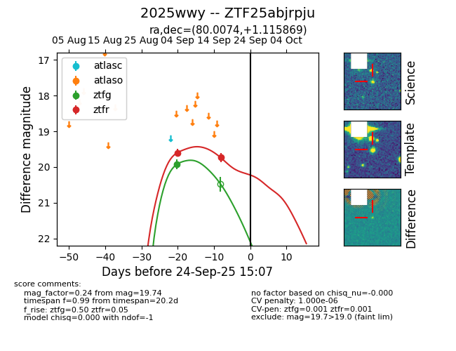
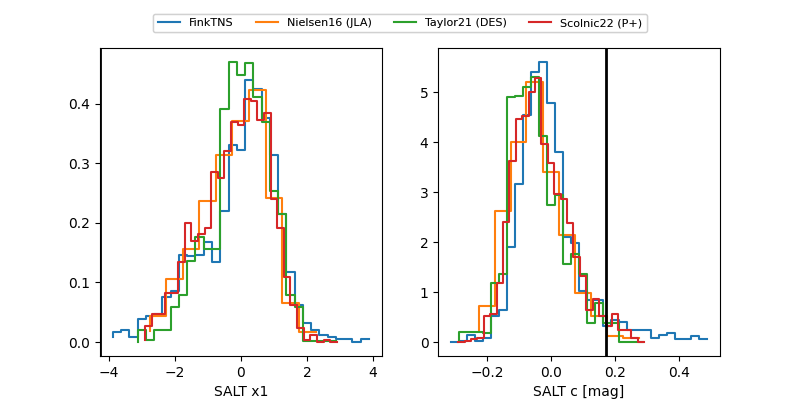

FINK: ZTF25abjrpju
Lasair: ZTF25abjrpju
ALeRCE: ZTF25abjrpju
TNS: 2025wwy
YSE: 2025wwy
ZTF25abjrpju (ztf,fink)
2025wwy (tns,yse)
equatorial (ra, dec) = (80.0074,+1.11587)
galactic (l, b) = (201.0185,-19.67498)


last ztfg=19.92, ztfr=19.74
1 ztfg, 2 ztfr detections